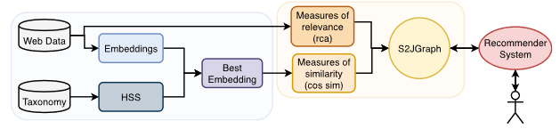
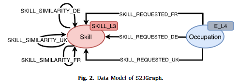

Recommender Systems with Graph Databases
Introduction
In our daily lives, we interact several various recommender systems; algorithms designed to find products, content, or other people that we may have connections with. Some of the most successful, such as Facebook’s “People you may know”, Wikipedia’s related articles, and Netflix’s movie recommendations, have a common denominator; their underlying data storage, specifically, graph databases.
Today we will take a deeper look into how recommender systems can be enabled by graph models, and why they are such an effective design pattern.
Why graph databases versus traditional databases
The study of graphs is not new; the first paper on graph theory is widely considered to be Euler’s Seven Bridges of Königsberg which was published in 1736. It has been practically applied in disciplines including systems engineering, mathematics, and social sciences.
But recommender systems are built on data, many millions of data points; why not use the traditional structured data format which is intended to handle and scale data at various orders of magnitude?
The simple answer is interconnectedness - graph databases excel at interconnected data in ways that traditional databases can only approximate. There are other benefits will discuss later.
Recommender systems, at their core, provide suggestions based on the strength of relationships between interconnected objects. Traditional structured data uses synthetic join keys between specific fields across many tables to simulate these kinds of relationships; consider a move recommender system that stores its users, their viewing history, movies and their metadata, reviews, and so on in distinct table. One would need to join between each of these tables, perhaps computing additional measures, to find that User A and User B both watched Movie X. The relationship is a mechanism, and not a distinct attribute in traditional relational databases.
In stark contrast, the relationships, or edges, in graph databases are first-class citizens. That is to say, relationships between data points are of equal importance as the data points themselves. Considering our earlier movie recommendation, User A, User B, and Movie X are individual nodes, connected by their mutual relationship of having watched (and been watched, respectively) as a distinct entity; a relationship. This relationship itself can be queried, categorized, and summarized just as the users and movies themselves would be in a relational database.
This allows us to ask powerful and informative questions, especially applying concepts from graph theory. Let’s look at a more specific use case to demonstrate how this is used in practice.
Job recommender system
The authors of https://feast-ecmlpkdd.github.io/archive/2021/papers/FEAST2021_paper_2.pdf demonstrate how they applied graph databases to encode job offers and skills to then feed a recommender system allow users to find postings that best fit their skill portfolio.
In their implementation, both occupations and skills are considered nodes in the graph database. These nodes are then connected by a directional edge (or relationship) from the occupation to the skills, essentially representing the natural language phase “This job requires these skills”.
What truly powers the recommendation engine though, is the properties of the relationship, which allow the authors to quantitatively measure the strength of a relationship between an occupation and a skill. This relationship can be used both graphically as the “distance” of a skill to an occupation, as well as analytically, to describe the most important or relevant skills to a given occupation.

The authors deployed this design as an application called “Skills2Job”. From an end user’s standpoint, a job hunter, they would simply list their current skills and have an array of job offers suggested to them, prioritized according to their specific skill set. Optionally, someone looking to break into a new domain could easily see the most important skills related to those offers and understand what sort of development they might take to become competitive.
All of this functionality comes from a very simple graph database that consists of two nodes and one relationship.
Additional Considerations
Performance
We have barely grazed the surface of the potential of graph databases in recommender system applications. There’s also significant performance implications; the edges in a graph database are essentially memory pointers, allowing extremely efficient traversal of nodes and edges compared to a indexed system of relational databases. This is called index-free adjacency, and effectively it means that the runtime of querying your graph remains similar as your data scale expands in orders of magnitude; very important as your recommender system grows and more and more users are interacting with it1.
Horizontal scaling, such as adding additional dimensions to a graph database, is as simple as creating a new node and relationship to an existing database, whereas a traditional database would require a schema change and the maintenance and downtime associated with it. Sharding is a technique that can be used for relational databases, but the trade-off is complexity and consistency.
Intuitiveness
And perhaps most importantly, graph databases are intuitive to humans. They allow us to tap into our powerful visual processing capabilities, just as a good visualization would. Relationships and nodes are conceptually easier to grasp than primary keys and schemas, especially as relationships become complex and the scale of data expands2.
Conclusion
Recommender systems are powerful tools but as with any application, the correct data model to support it is paramount. Graph databases, while relatively nascent, solve a great deal of the issues applications can encounter as they scale, while also reducing the overall burden of maintainability and conceptual understanding. The two combined have demonstrated success in many applications, and will likely become increasingly commonplace across domains as vectorized data is increasingly sought after.
Footnotes
Stanescu, “A Comparison between a Relational and a Graph Database in the Context of a Recommendation System”. 2021 Link↩︎
See Fig. 2 and Fig. 3 in Stanescu 2021 for how similar data is more easily understood in graph format.↩︎